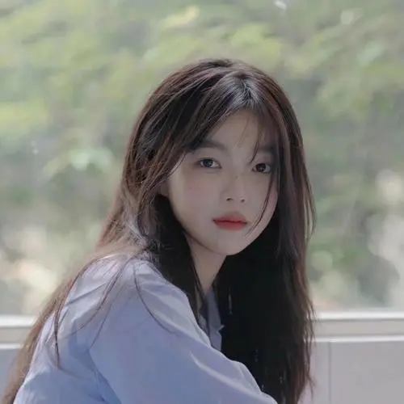

李白
养鱼总管
15779464875
43997k7k@game.com
www.4399.com
学历
博士牲
生日
2000-01-01
养鱼经验
4年

教育经历
2016 - 2018
中国研究院
养鱼科学与技术
2018 - 2020
中国研究院
养鱼架构与建设
养鱼经历
2020 - 2022
中国研究院
养鱼技术员
为什么我会选择养鱼，而不是养比较常见的小猫或者小狗呢？这和我本身的性格有关，我不喜欢太闹的，如果半夜有一点声音都会睡不着，养鱼是最安静的，所以养鱼比较适合我。我养的是七彩神仙鱼，因为这种鱼和人有互动性，也特别漂亮
2022 - 2024
中国研究院
养鱼建设大师
为什么我会选择养鱼，而不是养比较常见的小猫或者小狗呢？这和我本身的性格有关，我不喜欢太闹的，如果半夜有一点声音都会睡不着，养鱼是最安静的，所以养鱼比较适合我。我养的是七彩神仙鱼，因为这种鱼和人有互动性，也特别漂亮
技能指数
捕鱼
基因改造
孕育
环境构造
池塘优化
多池化
养鱼项目
鱼池链
观看地址
www.yuchilian_video.com
项目简介
www.yuchilian_desc.com
项目背景
着人口的增加和生活水平的提高，人们对食品的需求也越来越高，而鱼类作为一种
高蛋白、低脂肪、营养丰富
的食品， 在市场上的
需求也越来越大
，但
多池塘
管理起来繁琐......
项目实现
确定需要整合的
池塘数量、地理位置、水域环境
等因素。
设计一个中央管理系统，用于
监控、控制和优化
所有池塘的运营。
考虑使用物联网（IoT）技术，如传感器、自动化设备和远程监控设备， 来收集池塘的实时数据（如
水温、水质、鱼类生长情况
等）。
设计数据库和数据处理系统，用于
收集到的数据。
选择适合池塘环境的传感器和自动化设备。
在每个池塘部署传感器和自动化设备，确保它们能够
稳定、可靠
地工作。
建立数据传输网络，确保中央管理系统能够
实时接收和处理
数据。
跃龙门
观看地址
www.yuelongmen_video.com
项目简介
www.yuelongmen_desc.com
项目背景
着人口的增加和生活水平的提高，人们对食品的需求也越来越高， 但近些年来部分外来物种的入侵
破坏了生态平衡
，因此， 培养出
更强健的鱼类
抵抗甚至消灭外来鱼类迫在眉睫......
项目实现
通过
遗传学和育种
技术，筛选出具有
更强适应性、抗病性和竞争力
的本地鱼类品种。
利用现代生物技术手段，如
基因编辑和分子标记
辅助育种，可以加速这一进程。
发展
生态养殖模式
，模拟自然生态环境，为本地鱼类提供适宜的生长条件。
通过
改善水质、增加食物来源和减少养殖密度
等方式，提高本地鱼类的生长速度和健康状况。
个人评价
对培养鱼类具有极高的兴趣，且能力足以匹配，在世界养鱼大赛中获得金牌，曾培育出18种更健壮的鱼类，在原鱼类的基础下， 增强其发育能力、生存能力，拯救30种濒危鱼类。